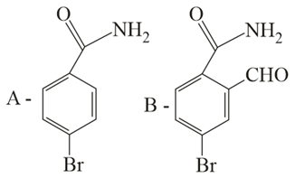

🧪 Some Basic Concepts of Chemistry
1247
Total Questions
5
Years
3
Clusters
Question Clusters
CHEM-SOMEBASI-MOLE_STOICHIOMETRY
Some Basic Concepts of Chemistry: Mole Concept & Stoichiometric Calculations
CHEM-SOMEBASI-CONCENTRATION_TERMS
Some Basic Concepts of Chemistry: Molarity, Molality, Mole Fraction & Normality
CHEM-SOMEBASI-EMPIRICAL_MOLECULAR_FORMULA
Some Basic Concepts of Chemistry: Empirical & Molecular Formula Determination
Year-wise Frequency
| Year | Questions | Frequency |
|---|---|---|
| 2021 | 329 | |
| 2022 | 159 | |
| 2023 | 312 | |
| 2024 | 249 | |
| 2025 | 198 |
Questions
Showing first 50 of 1247 questions.
Q31 (2021 Shift 2)
Number of paramagnetic oxides among the following given oxides is ___________ . Li2O, CaO, Na2O2, KO2, MgO and K2O (1) 1 (2) 3 (3) 0 (4) 2
Answer:
1CHEM-2021-0101-S2-Q031
Q32 (2021 Shift 2)
Hydrogen peroxide reacts with iodine in basic medium to give :
CHEM-2021-0101-S2-Q032
Q33 (2021 Shift 2)
The potassium ferrocyanide solution gives a Prussian blue colour, when added to :
CHEM-2021-0101-S2-Q033
Q34 (2021 Shift 2)
Which one of the following compounds is aromatic in nature?
CHEM-2021-0101-S2-Q034
Q36 (2021 Shift 2)
H+ / H2O KIO In the following sequence of reactions, C3H6 ⟶ A dilKOHB + C. The compounds B and C respectively are :
CHEM-2021-0101-S2-Q036
Q37 (2021 Shift 2)
Water sample is called cleanest on the basis of which one of the BOD values given below :
CHEM-2021-0101-S2-Q037
Q41 (2021 Shift 2)
The oxide without nitrogen-nitrogen bond is :
CHEM-2021-0101-S2-Q041
Q45 (2021 Shift 2)
Experimentally reducing a functional group cannot be done by which one of the following reagents ?
CHEM-2021-0101-S2-Q045
Q47 (2021 Shift 2)
In the following sequence of reactions a compound A, (molecular formula C6H12O2 ) with a straight chain structure gives a C4 carboxylic acid. A is : Oxidation 𝐴LiAlH4 𝐵 ⟶ C4 - carboxylic acid H3O+

CHEM-2021-0101-S2-Q047
Q49 (2021 Shift 2)
Identify A in the following reaction.

CHEM-2021-0101-S2-Q049
Q51 (2021 Shift 2)
The number of atoms in of sodium is 1023 The value of is _____ . (Nearest integer) 8 g 𝑥× . 𝑥 Given : NA = 6 . 02 × 1023 mol-1 Atomic mass of Na = 23 . 0u]
Answer:
2CHEM-2021-0101-S2-Q051
Q52 (2021 Shift 2)
A 50 watt bulb emits monochromatic red light of wavelength of 795 nm. The number of photons emitted per 1020 second by the bulb is 𝑥× . The value of 𝑥 is _____ . (Nearest integer) [Given : h = 6 . 63 × 10-34Js and 𝑐= 3 . 0 × 108 ms-1
Answer:
2CHEM-2021-0101-S2-Q052
Q54 (2021 Shift 2)
An empty LPG cylinder weighs 14 . 8 kg. When full, it weighs 29 . 0 kg and shows a pressure of 3 . 47 atm . In the course of use at ambient temperature, the mass of the cylinder is reduced to 23 . 0 kg . The final pressure inside the cylinder is _____ atm. (Nearest integer) (Assume LPG to be an ideal gas)
Answer:
2CHEM-2021-0101-S2-Q054
Q55 (2021 Shift 2)
For the reaction 2NO2 ( 𝑔) ⇌N2O4 ( g ) , when ΔS = - 176 . 0 J K-1 and ΔH = - 57 . 8 kJ mol-1 the magnitude of at for the reaction is _____ kJmol-1. (Nearest integer) ΔG 298 K
Answer:
5CHEM-2021-0101-S2-Q055
Q57 (2021 Shift 2)
If 80 g of copper sulphate CuSO4 · 5H2O is dissolved in deionised water to make 5 L of solution. The concentration of the copper sulphate solution is 𝑥× 10-3 mol 𝐿-1 . The value of 𝑥 is _____. [ Atomic masses Cu : 63 . 54u, S : 32u, O : 16u, H : 1u]
Answer:
64CHEM-2021-0101-S2-Q057
Q60 (2021 Shift 2)
A peptide synthesized by the reactions of one molecule each of Glycine, Leucine, Aspartic acid and Histidine will have _____ peptide linkages.

Answer:
3CHEM-2021-0101-S2-Q060
Q34 (2021 Shift 1)
Given below are two statements: Statement I : Both CaCl2. 6H2O and MgCl2. 8H2O undergo dehydration on heating. Statement II : BeO is amphoteric, whereas the oxides of other elements in the same group are acidic. In the light of the above statements, choose the correct answer from the options given below:
CHEM-2021-0101-S1-Q034
Q35 (2021 Shift 1)
Among the following, the aromatic compounds are : Choose the correct answer from the following options :
CHEM-2021-0101-S1-Q035
Q37 (2021 Shift 1)
In chromatography technique, the purification of a compound is independent of:
CHEM-2021-0101-S1-Q037
Q38 (2021 Shift 1)
The product " A " and " B " formed in above reactions are
CHEM-2021-0101-S1-Q038
Q40 (2021 Shift 1)
Given below are two statements : Statement I : The value of Ce4+ Ce3+ is E° / +1. 74 V Statement II : Ce is more stable in Ce4+ state than Ce3+ state. In the light of the above statements, choose the most appropriate answer from the options given below:
CHEM-2021-0101-S1-Q040
Q41 (2021 Shift 1)
The process that involves the removal of sulphur from the ores is :
CHEM-2021-0101-S1-Q041
Q46 (2021 Shift 1)
The product " P " in the above reaction is :
CHEM-2021-0101-S1-Q046
Q47 (2021 Shift 1)
In the above chemical reaction, intermediate " " and reagent/condition " " are : X A
CHEM-2021-0101-S1-Q047
Q51 (2021 Shift 1)
Complete combustion of 750 g of an organic compound provides 420 g of CO2 and 210 g of H2O . The percentage composition of carbon and hydrogen in organic compound is 15. 3 and ______ respectively. (Round off to the Nearest Integer)
Answer:
3CHEM-2021-0101-S1-Q051
Q52 (2021 Shift 1)
A 6. 50 molal solution of KOH(aq. ) has a density of 1. 89 g cm−3 . The molarity of the solution is mol dm−3 . (Round off to the Nearest Integer). [Atomic masses: K : 39. 0 u; O : 16. 0 u; H : 1. 0 u ]
Answer:
9CHEM-2021-0101-S1-Q052
Q53 (2021 Shift 1)
When light of wavelength 248 nm falls on a metal of threshold energy 3. 0 eV , the de-Broglie wavelength of emitted electrons is ________ A o . (Round off to the Nearest Integer). [Use : J] √3 = 1. 73, h = 6. 63 × 10−34 Js; me = 9. 1 × 10−31 kg; c = 3. 0 × 108 ms−1; 1 eV = 1. 6 × 10−19
Answer:
9CHEM-2021-0101-S1-Q053
Q54 (2021 Shift 1)
For the reaction at , ΔrG° mol−1 A(g) ⇌B(g) 495 K = −9. 478 kJ If we start the reaction in a closed container at 495 K with 22 millimoles of A , the amount of B is the equilibrium mixture is ________ millimoles. (Round off to the Nearest Integer). [R = 8. 314 J mol−1 K−1; ℓn10 = 2. 303]
Answer:
20CHEM-2021-0101-S1-Q054
Q56 (2021 Shift 1)
2 MnO− 4 + bC2 O2− 4 + cH+ →xMn2+ + yCO2 + zH2 O If the above equation is balanced with integer coefficients, the value of c is _______ . (Round off to the Nearest Integer).
Answer:
16CHEM-2021-0101-S1-Q056
Q57 (2021 Shift 1)
A o certain element crystallises in a bcc lattice of unit cell edge length 27 A . If the same element under the same o conditions crystallises in the fcc lattice, the edge length of the unit cell in A will be __________. (Round off to the Nearest Integer). [Assume each lattice point has a single atom] [Assume √3 = 1. 73, √2 = 1. 41 ]
Answer:
33CHEM-2021-0101-S1-Q057
Q32 (2021 Shift 2)
The characteristics of elements X, Y and Z with atomic numbers, respectively, 33, 53 and 83 are:
CHEM-2021-0101-S2-Q032
Q34 (2021 Shift 2)
The exact volumes of 1 M NaOH solution required to neutralise 50 mL of 1 M H3 PO3 solution and 100 mL of 2 M H3 PO2 solution, respectively, are :
CHEM-2021-0101-S2-Q034
Q38 (2021 Shift 2)
The green house gas/es is (are):
CHEM-2021-0101-S2-Q038
Q41 (2021 Shift 2)
Fex2 and Fey3 are known when x and y are :
CHEM-2021-0101-S2-Q041
Q43 (2021 Shift 2)
Identify the reagent(s) ' ' and condition(s) for the reaction : A
CHEM-2021-0101-S2-Q043
Q46 (2021 Shift 2)
Which of the following is least basic?
CHEM-2021-0101-S2-Q046
Q47 (2021 Shift 2)
The structure of is: X
CHEM-2021-0101-S2-Q047
Q51 (2021 Shift 2)
When 35 mL of 0. 15 M lead nitrate solution is mixed with 20 mL of 0. 12 M chromic sulphate solution, ____________ ×10−5 moles of lead sulphate precipitate out. (Round off to the Nearest Integer).
Answer:
525CHEM-2021-0101-S2-Q051
Q53 (2021 Shift 2)
At 25°C, 50 g of iron reacts with HCl to form FeCl2 . The evolved hydrogen gas expands against a constant pressure of 1 bar . The work done by the gas during this expansion is -_______ J . (Round off to the Nearest Integer) [Given : R = 8. 314 J mol−1 K−1 . Assume, hydrogen is an ideal gas] [Atomic mass off Fe is 55. 85 u ]
Answer:
2218CHEM-2021-0101-S2-Q053
Q55 (2021 Shift 2)
In Duma's method of estimation of nitrogen, of an organic compound gave of nitrogen 0. 1840 g 30 mL collected at 287 K and 758 mm of Hg pressure. The percentage composition of nitrogen in the compound is ______. (Round off to the Nearest Integer). [Given : Aqueous tension at 287 K = 14 mm of Hg ]
Answer:
19CHEM-2021-0101-S2-Q055
Q56 (2021 Shift 2)
Ga (atomic mass 70 u ) crystallizes in a hexagonal close packed structure. The total number of voids in 0. 581 g ×1021 of Ga is ________ . (Round off to the Nearest Integer).
Answer:
15CHEM-2021-0101-S2-Q056
Q57 (2021 Shift 2)
At 363 K , the vapour pressure of A is 21 kPa and that of B is 18 kPa . One mole of A and 2 moles of B are mixed. Assuming that this solution is ideal, the vapour pressure of the mixture is___________ kPa . ( Round of to the Nearest Integer . )
Answer:
19CHEM-2021-0101-S2-Q057
Q35 (2021 Shift 1)
The correct order of conductivity of ions in water is:
CHEM-2021-0101-S1-Q035
Q36 (2021 Shift 1)
Which of the following is an aromatic compound?

CHEM-2021-0101-S1-Q036
Q39 (2021 Shift 1)
CHEM-2021-0101-S1-Q039
Q40 (2021 Shift 1)
Reducing smog is a mixture of:
CHEM-2021-0101-S1-Q040
Q45 (2021 Shift 1)
The above reaction requires which of the following reaction conditions?
CHEM-2021-0101-S1-Q045
Q46 (2021 Shift 1)
The product "A" in the above reaction is:

CHEM-2021-0101-S1-Q046
Q48 (2021 Shift 1)
Which of the following reaction is an example of ammonolysis?
CHEM-2021-0101-S1-Q048
Q50 (2021 Shift 1)
Which of the following is correct structure of tyrosine?

CHEM-2021-0101-S1-Q050